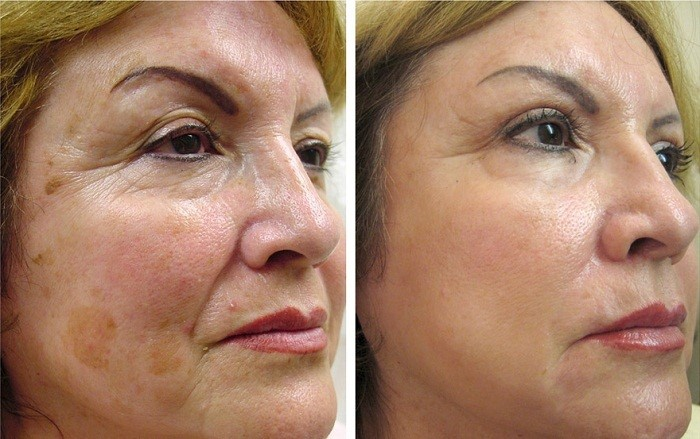
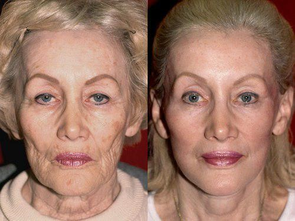

Naujienos
Išlyginti raukšles ir „nušluostyti“nuo veido 20 metų galima vos per 28 dienas: be patempimo ir injekcijų!
Jonas Hameris: „2019 m. d. aš asmeniškai išsiųsiu geriausią vaistą, skirtą beinjekciniam atjauninimui vos už 1 eurą pirmiesiems 50 skaitytojų iš Lietuvos, kurie atliks užsakymą“
Jonas Hameris Profesorius, medicinos daktaras. Vyriausiasis Lietuvos Sveikatos apsaugos departamento dermatologas ir kosmetologas. Medicinos universiteto odos ligų ir kosmetologijos katedros vedėjas. Euro-Azijos dermatovenerologų asociacijos (EAAD) prezidentas; Europos dermatologijos ir venereologijos akademijos (EADV) narys.
Medicinos praktika: daugiau nei 13 metai
„Įsiminkite paprastą tiesą ir neklausykite nė vieno: atjaunėti galima be chirurgijos ir injekcijų, net giliausioje senatvėje“
Prieš pusantro mėnesio buvo pradėta vykdyti Valstybinė programa „Graži šalis“, skirta Lietuvos gyventojams atjaunėti. Šios programos metu, pagal Sveikatos apsaugos ministerijos 2017-04-09 įsaką Nr. 71395, bet kuris Lietuvos gyventojas gali užsisakyti produktą, skirtą ekspresiniam odos atjauninimui, už 1 eurą lengvatine kaina! Iš karto po eterio 1-ajame nacionaliniame televizijos kanale (tema „Kaip pajaunėti 10–20 metais bet kokiame amžiuje“) mums sutiko duoti interviu žymus profesorius Jonas Hameris.
Korespondentas: „Laba diena, ponai Hameris. Pasakykit, ar tiesa, kad greitas odos senėjimas po 35 metų gali būti sustabdytas tik su botokso injekcijomis ir plastine chirurgija?
J. Hameris: Sveiki! Žinoma, tai nėra tiesa. Botokso injekcijos turi didžiulį komplikacijų spektrą, įskaitant net odos deformaciją injekcijos srityje! Be to, botoksas, hialurono užpildai ir chirurginės intervencijos lygina raukšles trumpam laikui, o problema grįžta jau po 6-8 mėnesių, be to, sudėtinga forma. Tai yra užburtas ratas ir labai pelningas būdas praturtėti privačioms kosmetologijos ligoninėms.
Bet iš tikrųjų, oda yra elastingas organas, kuris bet kokiame amžiuje yra nuostabiai atjauninamas. Tai nėra stebuklas, bet paprastas mokslas.
Paslaptis yra nauja saugi amerikietiška priemonė, kuri aktyvina kraujo tekėjimą ir stimuliuoja odos regeneracijos procesą, pagreitindama jį 4-6 kartus! Kolageno ir elastino gamyba pasiekia 20 metų amžiaus žmogaus lygio, todėl raukšlės yra išlyginamos, o veido ovalas patempiamas kuo greičiau!
Korespondentas: “Taip, bet manoma, kad po 45 metų beveik neįmanoma atkurti odos?”
J. Hameris: Tai nesąmonės! Aš grąžinau jaunystę daugeliui mano vyresnių nei 50 metų pacientų be skausmo ir rizikos.
Korespondentas: “Ir jūsų giminaičiai ir draugai taip pat atnaujina jūsų pagalbą?”
J. Hameris: Žinoma! Ypač mano žmona. Daugelis žmonių kartais mano, kad ji yra mano dukra, nors ji yra 2 metais vyresnė už mane, dabar jai 48 metai! Dažniausiai pas mane ateina moterys, turinčios labai panašių problemų: veido raukšles, nosies-lūpų ir antakių raukšles, varnų kojas, patinusį veido ovalą, maišelius po akimis ir kt.
74 proc. vyrų sąžiningai atsakė, kad ieško jaunų meilužių, nes moterys, turinčios raukšlių, ir veido vytimo požymių, negali būti seksualiai patrauklios.
Korespondentas: “Ir kaip sugrąžinti jaunystę šiame amžiuje?”
J. Hameris: Iki šiol aš siūlydavau atjaunėjimą naudojant veido gimnastiką ir 96 pratimų kompleksą. Tai labai veiksmingas, bet labai sunkus ir ilgas metodas. Žmonėms sunku, jie neturi pakankamai laiko ir jėgų kasdieniniams pratimams, jie lengvai atsisako. Šiems pacientams aš ieškojau paprastesnio būdo - ir aš jį suradau.
Korespondentas: „Kaip įdomu! Papasakokite apie jį mūsų skaitytojams”
J. Hameris: Papasakosiu. Mūsų Dermatologijos centras buvo pirmasis Europoje, kuris gavo patvirtintą prieigą prie naujausio pajaunėjimo preparato - BIORETIN. Prisipažįsiu jums, kad kai pirmą kartą sužinojau apie jį - aš tik prasijuokau, nes netikėjau jo veiksmingumu. Bet buvau nustebęs, kai baigėme testavimą - 3431 moteris pastebimai pajaunėjo ir atrodo 15–25 metų jaunesnios nei jų amžius, tai yra daugiau nei 94 proc. visų bandomųjų.
Korespondentas: “Ir kaip veikia šis stebuklingas kremas?”
J. Hameris: Būtent čia jokio stebuklo, sausas mokslas. Kremo sudėtyje yra “signalinių peptide”, galinčių “pakelti jaunų ląstelių iš odos gelmių”, t.y. jo pagrindinis uždavinys yra gaminti kolageną ir regeneruoti tarpląstelinę “matricą”. Ar galite įsivaizduoti tokio mechanizmo biologinę galią? Nėra nieko, kas veiksmingiau aktyvuotų regeneruojančius procesus odoje.
Patepus net vieną kartą, jūs aktyvuojate apie 930 000 ląstelių, kurios užpildo raukšles ir patempia odą. Bet čia svarbiausias stabilumas: minimalus naudojimo kursas - 28 dienos, ir jo turi būti laikomasi.
Korespondentas: „BIORETIN padeda tik nuo raukšlių?“
J. Hameris: Ne, gi sakau jums: kremas veikia ląstelių lygmeniu, atkurdamas aprūpinimas krauju. kovoja su senėjimu, apsaugodamas ląsteles nuo suirimo. Skatina kraujotaką limfoje, kad pašalintų patinimą, „maišelius“ ir sumažintų tamsius ratus po akimis. Dėl natūralios kolageno ir elastino gamybos stiprina odos struktūrą, patempia reljefą ir veido ovalą.
Suprasti mane tinkamai – aš mėgstu mediciną ir kosmetologiją, ir nenustosiu užsiimti naujovėmis, tačiau šiandien daugumai moterų tai paprasčiausias, efektyviausias ir prieinamiausias būdas pajaunėti.
Korespondentas: „Jūs sakėte, kad BIORETIN įsigyti už 1 eurą lengvatine kaina gali kiekvienas žmogus?”
J. Hameris: Tiesa, yra dar vienas dalykas. Šiuo metu kartu su Sveikatos apsaugos ministerija buvo nuspręsta parduoti BIORETIN per specialiai sukurtą svetainę. Vis dėlto neįmanoma iš karto dirbti visoje Lietuvai, todėl nusprendėme vykdyti program “Graži šalis” pagal eilę visose Baltijos regiono šalyse. Dabar jis vyksta Lietuvoje. Šios šalies gyventojai gali pirkti BIORETIN kremą minimaliausia 1 euro kaina 2019 m. sausio - 2019. Būtent iki šio termino pabaigos (imtinai) reikia palikti paraišką svetainėje. Todėl tie, kurie nori įsigyti „BIORETIN“ už 1 eurų lengvatine kaina ir su juo atlikti pajaunėjiimo kursą, prašome skubėti.
Toliau kaina padidės iki standartinės, todėl stenkitės paspėti įforminti užsakymą.
BIORETIN kremo naudojimo rezultatai:

Po akimis buvo pilka oda su raukšlėmis ir maišeliais, kaip senai moteriai. Buvo ir nebuvo... per 10 dienų dingo beveik viskas! Ačiū už tai! Toliau atliksiu kursą.
Palaikau! Labai veiksminga priemonė odos senėjimo problemoms spręsti! Mėlynės po akimis ir nuovargio požymiai veide išnyko visiškai.
Ponai Valdai, ačiū jums! Pabandžiau, tapo tikrai geriau. Pažiūrėsime, kas bus po savaitės. Dar per anksti sakyti, kad vėliau parašysiu. Bet oda jau tapo lygesnė ir elastingesnė. Taigi, manau, viskas bus gerai! Tikiuosi, kad po to, kai busiu jaunesnė ir vėl tapsiu gražuole, nuspręsiu susitikti su vyru. Tegul buvęs vyras apgailestauja, kad mane pametė dėl jaunuolės.
Onutė, nesijaudinkite ir toliau naudokite BIORETIN skausmingose odos vietose. Svarbiausia yra laikytis vaisto vartojimo instrukcijų. Ir aš tikiu - jūsų gyvenimas pagerės!
Pagarbiai, Jonas.

Liaudi, padėkit! Jau esu pavargusi nuo brangių procedūrų pas kosmetologus. Senėjimas ant veido neduoda gyventi. Aš tiesiog nežinau, ką daryti. Aš reguliariai vartoju įvairias priemones, tačiau nepadeda: (
Stase, imkite BIORETIN, nesigailėsite. Aš pati turėjau pasirinkimą – plastinę operaciją ar šį kremą, motina ir vyras buvo prieš operacijas. Pasirinkau BIORETIN ir džiaugiuosi. Dėkoju motinai, kad surado BIORETIN ir privertė jį naudoti. Beje, buvau nusipirkusi prieš pusmetį, be jokios valstybinės programos (ir kaina buvo didelė, daug kartų didesnė). Tačiau dabar šiaip jau jokių problemų ir gyvenu, žaviuosi savimi šalia mylinčio vyro. Tikėkite, paimkite ir viskas bus gerai, pamatysite
Kaip pirkti BIORETIN?

Olga, čia tau nuoroda į BIORETIN, tik paskubėk, kai vyksta nacionalinė programa. Kremas man labai padėjo
Jone, taip, ačiū, jau užsisakiau!
Tik neįtikėtinas vaistas, patariu visiems, todėl kiek galima gyventi su raukšlėm ir negražia oda, net kosmetika neslėpė šio siaubo. Tačiau po to, kai pasinaudojau BIORETIN per 10 dienų, viskas tapo daug geriau.
Bet ar rezultatas yra toks veiksmingas? Tikriausiai verta užsisakyti.

Pasakysiu ir savo istoriją, turėjau panašų atvejį. Taip pat problemos su vyru, kad esu sena ir bjauru, jam su manimi gėda. Taip būdavo nemalonu girdėti. Pradėjo ieškoti būdų, kaip kovoti su senatve. Į operacijas net nežiūrėjau. Tada aš suradau straipsnį, nusprendžiau užsisakyti BIORETIN. Gaila, kad nacionalinės programos tada nebuvo, bet nieko. Siuntinys atvyko per 5 dienas, pradėjo tepinėti. Ir kaip gi gerai, kad nusipirkau - 14 dienų ir rezultatas neįsivaizduojamas. Imkit, liaudi, nesigailėsite.

Matau ne tik aš turių tokias problemas, bet dėkoju dievui, kad prieš mėnesį suradau BIORETIN, išgelbėjo mane nuo raukšlių, taip greitai, kaip dešimtys procedūrų ir vaistų negalėjo padaryti

Pasakykite, liaudi, kremas padės? Nes iš vaistų ir gydytojų jokios naudos
Žinoma, Aleksandra. Jo poveikis yra labai stiprus ir svarbiausias dalykas yra tas, kad net sveikatai nekenkia. Taigi skubėkit užsisakyt! BIORETIN man padėjo visiškai atsikratyti antakių raukšlių.
Ačiū, kremas BIORETIN labai greitai padėjo! Užsisakiau jį oficialioje gamintojo svetainėje! Nedelskite su gydymu, geriau atsikratyti šių odos problem dabar, nei vėliau suprasti, kad esate praradę jaunimą.
Ačiū, ponai Hameris. Jei ne jūs, nepatikėtiau kremo efektyvumu! Vyras džiaugiasi ir giriasi savo draugams, kad jo žmona atrodo jauna. Įdomiausias dalykas yra tai, kad jis dažniau pradėjo eiti su manimi į restoranus ir dovanas dovanoti! Ačiū, Valdai!
Siuntinys atvyko labai greitai.

Egle, ne reikia dėkavoti. Geriau pasakykit man, prašau, kiek ilgai truko jūsų kursas?
Pagarbiai, Jonas.


Pagarbiai, Jonas.


Pagarbiai, Jonas.
Aš naudoju BIORETIN jau pusę metų, draugė atvežė. Rezultatas yra ant veido, poveikis yra galingas. Kaip ir po veido patempimo
Aš perskaičiau straipsnį ir iš karto nusprendžiau pabandyti. Dalykas yra tas, kad paprasti vaistai man padėdavo neilgam. Dabar sakau apie rezultatus. BIORETIN atvyko labai greitai. Jau pirmąją dieną jaučiu odos lygumą, todėl tiesiog negalėjau apie tai neparašyti. Labai ačiū, dabar bent jau galiu normaliai gyventi!
Žmonės, pasakykite man, kur nusipirkote? Vaistinėse ši priemonė nėra parduodama, bet internete baisu pirkti. Nenorėčiau gauti padirbinį, nes, kaip suprantu, nebus jokios prasmės.
Dar kartą kartoju, kad BIORETIN kremas gali būti užsakytas TIK oficialiame tinklapyje, kad nesuklystų, tiesiog paspauskite mygtuką žemiau! Ypač Lietuvos piliečiams, vykdant nacionalinę programą, galioja 1 euro lengvatinė kaina, tačiau ji neveiks labai
ilgai, todėl skubėkite su užsakymu! Ir saugokitės, prašom, padirbinių.
Pagarbiai, Jonas.
Esu labai dėkinga už informaciją apie šią priemonę. Jau seniai ieškojau kažko panašaus. Labai laukiu siuntos! Ačiū!